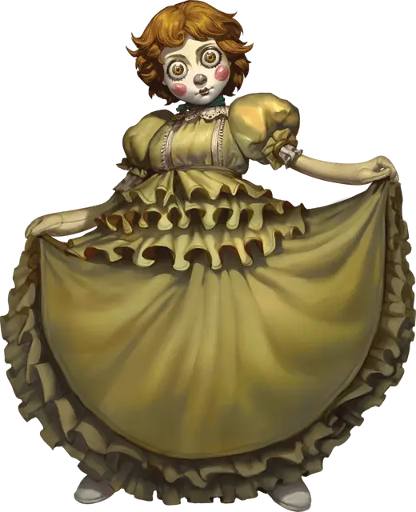

Живая кукла
Living Doll
Крошечный Конструкт, нейтрально-злой

Класс Доспеха 11 (природный доспех)
Хиты 28 (8к4 + 8)
Скорость 30 футов
| мод | спас | ||
|---|---|---|---|
| СИЛ | 3 | −4 | −4 |
| ЛОВ | 11 | +0 | +0 |
| ТЕЛ | 13 | +1 | +1 |
| мод | спас | ||
|---|---|---|---|
| ИНТ | 10 | +0 | +2 |
| МДР | 10 | +0 | +2 |
| ХАР | 7 | −2 | +0 |
Иммунитет к урону яд
Иммунитет к состояниям окаменение, отравление, паралич
Чувства тёмное зрение 30 футов, пассивное Восприятие 10
Языки Общий
Опасность 2 (450 опыта)
Бонус мастерства +2
Особенности
Обманчивая внешность. Если кукла неподвижна на момент начала сражения, она имеет преимущество на проверку инициативы. Более того, если существо не наблюдало за перемещениями или действиями куклы, оно должно преуспеть в проверке Интеллекта (Расследование), чтобы понять, что кукла одушевлена.
Регенерация. Кукла восстанавливает 5 хитов в начале каждого своего хода. Если кукла получает урон огнём или психической энергией, эта особенность не действует в начале её следующего хода. Кукла умирает только если начинает ход с 0 хитов и не может регенерировать.
Необычная природа. Кукла не нуждается в воздухе, пище, питье или сне.
Действия
Хваткие руки. . Рукопашная атака оружием: +2 к попаданию, досягаемость 5 фт., одна цель. Попадание: цель становится схваченной (Сл высвобождения 6) и получает 11 (2к10) урона психической энергией в начале каждого своего хода, пока захват не окончится. Кукла может схватить только одну цель.
Бонусные действия
Хихиканье (перезарядка 4–6). Кукла хихикает над одним или двумя существами в пределах 30 футов от себя, которые может видеть. Каждая цель которая может слышать куклу должна совершить спасбросок Интеллекта Сл 11, автоматически преуспевая, если имеет Интеллект 4 или меньше. При провале существо получает 2к4 урона психической энергией и становится недееспособным на 1 минуту, поскольку содрогается в приступе смеха. Существо может повторять спасбросок в конце каждого своего хода, оканчивая на себе эффект при успехе. Преуспевшее в спасброске существо становится невосприимчивым к Хихиканью этой куклы на 24 часа.
Описание
Живую куклу можно с лёгкостью принять за неодушевлённую куклу или плюшевое животное, пока она не начнёт двигаться. Пойманный в ловушку внутри каждой живой куклы слабый дух поощряет вести своё окружение некрасиво по отношению к другим. Кукла наслаждается мучениями страдающих и осознающих свою вину и провоцирует впадение в депрессию или паранойю. Поскольку она опасается, что её сломают, кукла редко целенаправлено причиняет другим вред. Когда кукла вынуждена защищать себя, она деморализует противников своим маниакальным хихиканьем и влияет на разум врагов, обращая против них их глубинные страхи.